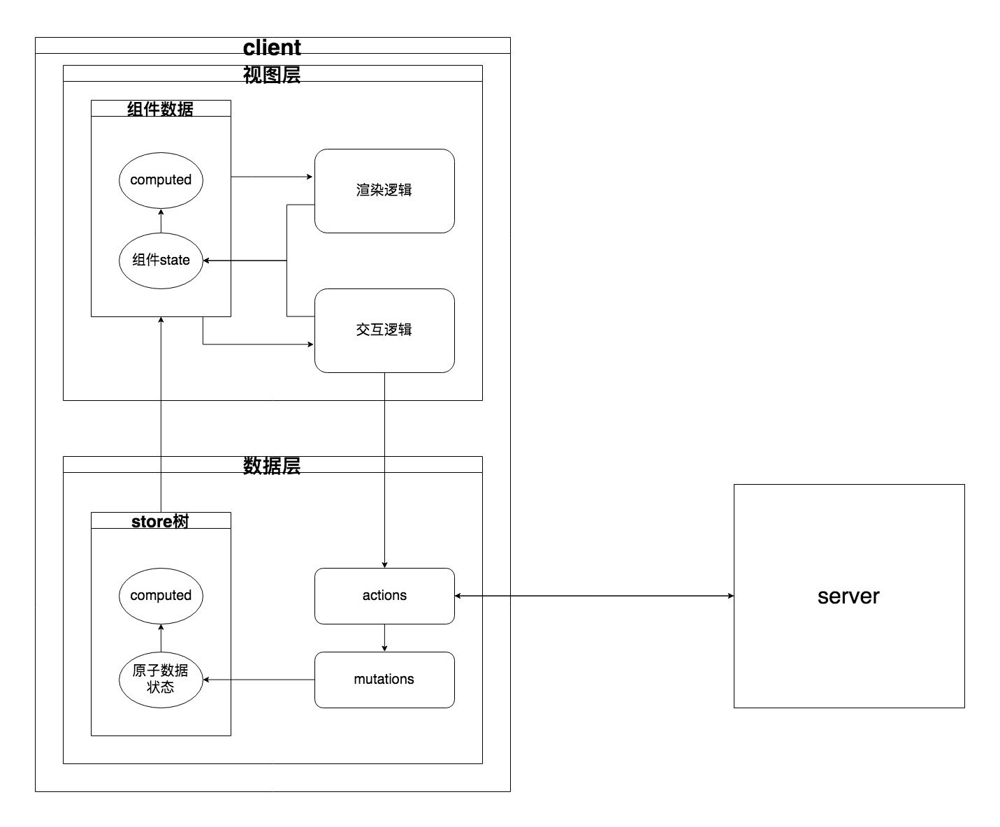

复杂单页应用的数据层设计
这个标题是直接借用的这篇 blog 的标题。最近写了几个小程序，关于数据层应该如何设计，下面我将谈谈自己的体会。
1. 什么是单页应用的数据层？

上图是我写的小程序的层次示意图，简单一点说，数据层对应单页应用中的store。
2. 为什么需要数据层？
单页应用现在都是用MVVM框架实现的，这些框架的核心就是数据驱动视图。用函数表示就是：1
view = f(state)
我们所需要做的就是定义state和view，框架则是实现f，自动将state映射到相应的view。所以页面中的交互就转化为操作对应的state。
复杂的单页应用会划分为好多页面和组件，有一些state会被多个视图所使用，并保持一定的同步，这就需要我们将这些state放到store中，全局来管理。而将store划为数据层，则是为了和视图层分离，让代码层次更清晰，更易维护。那为什么这样更清晰，更易维护呢？
首先从图1中可以看出：
应用被划分为前端+后端（client+server）
因为应用可以抽象为数据+数据流转，而数据更易抽象和复用，所以后端负责把应用抽象为数据，把业务逻辑抽象为数据操作，然后封装成API供前端调用，而前端主要负责的是展示视图与交互。这样业务逻辑清晰，视图可以按需定制。
对于一部分应用，可能前端主要就是展示视图与交互，业务复杂度在后端，因此用不到数据层。
可是现在单页应用越来越复杂，而且需要无刷新，一个状态的改变可能需要几十个相关视图更新，而且数据需要拉取、聚合、过滤，更新等，前端逻辑变复杂了，如果这些逻辑仍和视图层代码混在一块，将使交互逻辑不清晰，代码难于维护，定制视图的成本变高。而往往这部分数据操作是可复用的，因此抽象出数据层，能使前端业务代码更聚焦于展示视图与交互。
3. 怎样设计数据层？
（1）数据聚合放在前端
后端数据库中存储的数据都是原子化的，数据间建立关联，同一份数据不会维护在多个地方。而前端视图中所需要的数据格式往往是和数据库中不同的，因此需要一些聚合的过程，聚合出视图需要的数据格式。数据聚合可以放在后端，可以放在前端，甚至放在中间层。
复杂的单页应用往往会有很多细粒度的更新，而且一个数据更新了，相关数据也需要更新，数据聚合放在前端，前端可以根据视图需要，快速聚合出相应数据。
从图1可以看出，视图层应聚焦展示视图与交互，有了MVVM框架，视图可以自动根据数据来渲染视图，有前端数据层作为server数据的适配层，视图层可以直接从数据层拿需要的数据进行渲染，视图层逻辑聚焦在交互上。
数据聚合放在数据层就是计算属性，对应于vuex中的getters，redux可以借助reselect实现，用vuex代码举例：1
2
3
4
5
6
7
8
9
10
11
12
13
14
15
16
17{
state: {
articles: [],
userArticles: [],
},
getters: {
getArticles: state => bookId =>
state.articles.filter(article => article.book_id === bookId),
getUserArticle: state => articleId =>
state.userArticles.find(userArticle => userArticle.article_id === articleId) || {},
getPairedArticles: (_, { getArticles, getUserArticle }) => bookId =>
getArticles(bookId).map(article => ({
article,
userArticle: getUserArticle(article.id),
})),
}
}
因为数据是在前端聚合的，所以服务端API需要零散化，返回细粒度的数据。但这样会带来一个问题，就是请求数量增多，可能需要同时查article，tags，user。对此，API可以做物理聚合，不做逻辑聚合，类似：1
2
3
4
5{
article: Ariticle
tags: Tags[]
user: User
}
这样前端数据层中就可以存储原子化的数据，同一份数据不会维护在多个地方。
如果API返回嵌套的数据，也可以借助normalizr将数据范式化。
（2）数据缓存
数据层中保存了原子化的数据，如果store中已经存在了相应的数据，那就不需要再从server拉取了。1
2
3
4
5
6
7
8
9
10
11
12
13
14 mutations: {
appendArticles(state, articles) {
state.articles = [...state.articles, ...articles];
},
},
actions:{
async fetchArticlesIfNot({ commit, state }, { bookId }) {
if (!state.articles.length || !state.articles.find(article => article.book_id === bookId)) {
const res = await fetch('/articles');
commit('appendArticles', res);
}
},
}
}
4. 待深入的点
- 前端orm将数据层操作更加规范化
- 用Worker隔离计算逻辑
- 用ServiceWorker实现本地共享
- 与本地持久缓存结合
5. 总结
数据层有以下优势：
1.视图的极度轻量化
2.增强了整个应用的可测试性
3.跨端复用代码
vuex, redux都可以实现这样的数据层，不过它们实现的原理不同，写法不同，具体选择哪个看个人喜好和具体使用场景。
本文参考了如下文章：